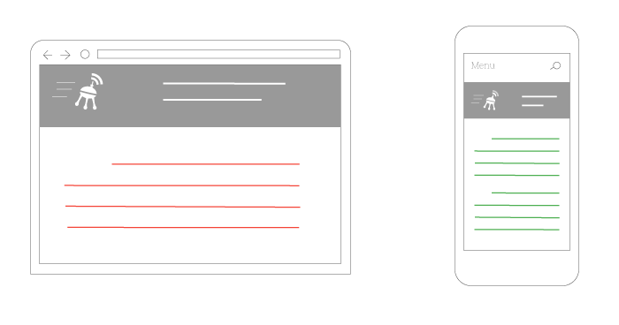
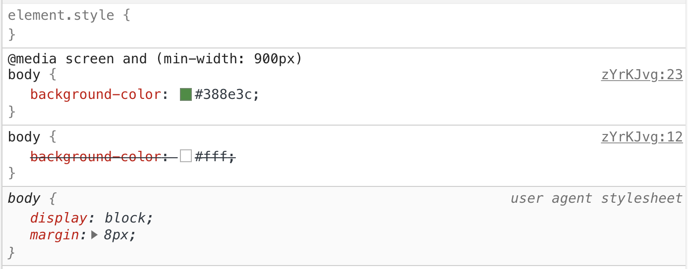
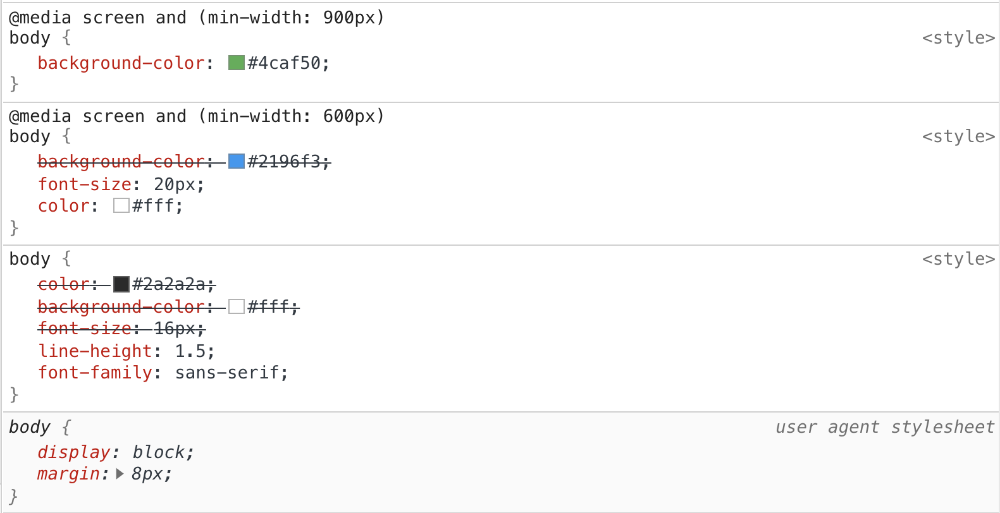

Медіа-запити - це те, що робить можливим створення сучасних адаптивних веб-сторінок, які однаково добре виглядають на будь-якому екрані, чи то десктоп, чи то смартфон. Все зводиться до застосування того або іншого CSS-правила, залежно від розміру вікна браузера (області перегляду, в'юпорту), налаштувань браузера або можливостей пристрою.
Алгоритм застосування стилів наступний:
- Розробник описує набір медіа-запитів і CSS-правил всередині них.
- Браузер відстежує зміну розміру в'юпорту.
- Браузер застосовує CSS-правила з медіа-запитів, що відповідають поточному розміру в'юпорту.
Тобто медіа-запити - це інструкції на зразок: «коли сторінку відкрили на десктопі, я хочу, щоб колір тексту був червоним, а у разі відкриття на телефоні - зеленим».
Синтаксис
@media media-type and (media-feature) {
/*
* Набір CSS-правил, які потрібно застосувати до документа,
* якщо дотримуються умови перевірки медіатипу і виразу
*/
}
Медіа-запит - це спеціальна CSS-конструкція, яка оголошується директивою @media, за якою може йти тип пристрою (media-type) і медіа-функції (media-feature) - вирази, що перевірять характеристики пристрою (наприклад ширину в'юпорту). Медіа-функція - це логічний вираз, який повертає істину (вірно) або хибність (невірно).
Наприклад, якщо необхідно зробити фон <body> помаранчевим при ширині в'юпорту 900px і ширше, необхідно записати наступний медіа-запит.
@media screen and (min-width: 900px) {
body {
background-color: orange;
}
}
Людською мовою це можна прочитати як: «якщо сторінка відображається на екрані, ширина якого не менше 900 пікселів, необхідно застосувати вказане CSS-правило».
Перейдіть на сторінку прикладу, клікнувши у верхньому правому куті редактора на Edit on Codepen, і змінюйте ширину області з результатом. Колір фону <body> буде змінюватися, залежно від ширини в'юпорту, вказаної в медіа-запитах.
See the Pen lesson-15-basic-media-query by goit-academy (@goit-academy) on CodePen.
Умова перевірки може бути настільки складною або простою, наскільки цього вимагає ситуація. Здебільшого достатньо вказати медіа-тип пристрою (найчастіше screen), і перевірити тільки ширину в'юпорту.
/*
Цей медіа-запит застосується під час друку документа.
*/
@media print {
/* ... */
}
/*
Цей медіа-запит застосується при ширині в'юпорту більше 400px.
*/
@media screen and (min-width: 400px) {
/* ... */
}
/*
Тип screen можна не вказувати, якщо стилі пишуться тільки для екранів.
*/
@media (min-width: 400px) {
/* ... */
}
Медіа-типи
Медіа-тип використовується для опису типу пристроїв, на яких може відображатися веб-сторінка. Всього існує три типи, які підтримуються всіма сучасними браузерами.
- all - якщо не вказати тип носія, за замовчуванням буде використано це значення, яке означає будь-який пристрій.
- print - відповідає принтерам і пристроям, призначених для відтворення друкованого варіанту, наприклад веб-браузера, що відображає документ у режимі «Попередній перегляд».
- screen - описує пристрої з фізичним екраном: смартфони, планшети, монітори, телевізори тощо. Тобто все, що не охоплює тип print.
Медіа-функції
Дві медіа-функції, що найчастіше використовуються і дозволяють визначати ширину в'юпорту браузера - min-width і max-width. Вказується мінімальна (min-width) або максимальна (max-width) допустима ширина в'юпорту, за якої застосовуються правила з медіа-запитів.
/* Застосується, коли ширина в'юпорту більша за 900px */
@media (min-width: 900px) {
body {
background-color: green;
}
}
/* Застосується, коли ширина в'юпорту менша за 600px */
@media (max-width: 600px) {
body {
background-color: yellow;
}
}
Якщо уявити ширину в'юпорту як пряму від 0 до нескінченності, то ми описуємо проміжок, на якому необхідно застосувати якісь стилі.

Корисно:
Розмір в'юпорту, за якого вся верстка або її окремі частини змінюють
свої стилі, тобто змінюється дизайн, називається
точкою перелому (breakpoint) .
При зміні ширини в'юпорту в прикладі до 600px, фон <body> буде жовтого кольору, а після 900px - зеленого. У проміжку від 601px до 899px - колір білий, значення вказане за замовчуванням, тому що жоден медіа-запит не підійде.
See the Pen lesson-15-media-features by goit-academy (@goit-academy) on CodePen.
А як описати проміжок, наприклад від 600px до 900px? Необхідно використовувати логічні оператори для складових медіа-функцій.
Логічні оператори
Медіа-тип і медіа-функції можуть бути розділені необов'язковими логічними операторами not, and і only - значення за замовчуванням. Повний синтаксис медіа-запиту виглядає наступним чином.
@media only|not media-type only|and|not (media-feature) {
/*
Набір CSS-правил, які потрібно застосувати до документа,
якщо виконується умова перевірки медіатипу і виразу
*/
}
Оператор and
Оператор and (буквально «І») використовується не тільки між типом носія і медіа-умовою, але і для зв'язування декількох медіа-функцій з перевірками значень.
@media screen and (min-width: 400px) and (max-width: 800px) {
body {
background-color: red;
}
}
Такий медіа-запит виконається тільки, якщо веб-сторінка відкрита на екрані, а ширина в'юпорту знаходиться в діапазоні від 400px до 800px.

Оператор ,
Оператор , (буквально «АБО») дозволяє вказати набір виразів, при виконанні хочаб одного з них, виконається медіа-запит.
Наприклад, необхідно застосувати стилі в діапазоні до 600px або після 900px.
@media (max-width: 600px), (min-width: 900px) {
body {
background-color: orange;
}
}
Тобто це просто перелічення набору медіа-запитів, за яких повинні застосуватися стилі. Це можна записати як два різних медіа-запити. Але тоді код стилів <body> буде дублюватися.
@media (max-width: 600px) {
body {
background-color: orange;
}
}
@media (min-width: 900px) {
body {
background-color: orange;
}
}
Корисно:
У майбутніх редакціях CSS, оператор , буде замінений на оператор
or .
Оператор not
Оператор not (буквально «НЕ») дозволяє зробити заперечення, тобто скасувати медіа-запит. Ключове слово not додається на початку медіа-запиту і застосовується до всього запиту. Використовується дуже рідко, в якихось специфічних випадках.
Наприклад, запишемо умову, за якої стилі повинні застосуватися скрізь, крім друку.
@media not print {
/* ... */
}
При використанні оператора not обов'язково повинен бути зазначений тип носія, тому що за замовчуванням для нього буде встановлено значення all і вираз not all буде читатися буквально як «не всі», і медіа-запит ніколи не виконається.
/* Ніколи не виконається */
@media not (max-width: 500px) {
/* ... */
}
/* Виконається, якщо ширина буде більша за 500px. */
@media not screen and (max-width: 500px) {
body {
background-color: tomato;
}
}
/*
В такому разі, для простоти читання коду
краще використовувати min-width: 500px.
*/
@media (min-width: 500px) {
body {
background-color: tomato;
}
}
Перевизначення стилів
Ніщо не заважає браузеру застосувати більше одного медіа-запиту одночасно, якщо вони підходять за умовою. Медіа-запити не додають специфічності селекторам, які вони містять, але порядок правил як і раніше має значення. Тобто правила, що знаходяться в медіа-запитах, беруть участь у стандартному каскадуванні під час складання фінальних стилів елемента.
/* Базовий стиль */
body {
background-color: #fff;
}
/* На 900px і ширше перевизначаємо фон */
@media screen and (min-width: 900px) {
body {
background-color: #388e3c;
}
}
В інструментах розробника можна наочно побачити, як застосовуються CSS-правила і перевизначається колір фону елемента <body>.
Водночас перевизначаються тільки однакові властивості, а не повністю все правило. Завдяки цьому, можна робити листковий пиріг зі стилів, не дублюючи попередні, які підходять і для поточного медіа-запиту.
See the Pen lesson-15-overriding by goit-academy (@goit-academy) on CodePen.
Таким чином в інструментах розробника будуть виглядати стилі елемента <body> при ширині в'юпорту більшої за 900px.
